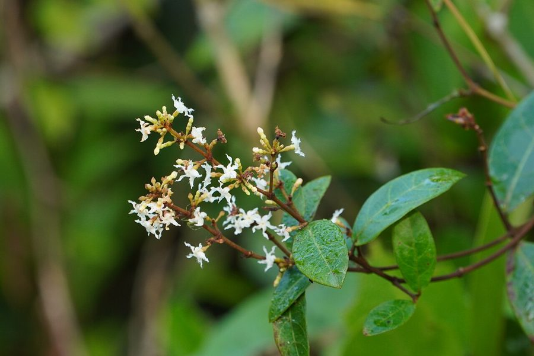

काली बेलBlack Creeper
Ichnocarpus frutescens · Apocynaceae · FLR-0360

- Scientific name वैज्ञानिक नाम
- Ichnocarpus frutescens (L.) W.T.Aiton
- Family कुल
- Apocynaceae
- Hindi हिंदी
- काली बेल
- Local names स्थानीय नाम
- kali bel, black creeper, kali sariva, syamalata
- Status here यहाँ की स्थिति
- native
- Movement आवागमन
- Resident, here all year
- Known from कहाँ दर्ज
- Others have published records from the wider Awadh–Purvanchal plain, none yet from Basti–Ayodhya अवध–पूर्वांचल से दूसरों के प्रकाशित अभिलेख, बस्ती–अयोध्या से अभी नहीं
- IUCN IUCN
- not evaluated
- Review समीक्षा
- not yet reviewed
When to look कब देखें
Present all year. साल भर मौजूद।
Uses and possibilities उपयोग और संभावनाएँ
“Traditional medicine” means a documented traditional use, not a claim that it works. Nothing on this page is medical advice.
Drawn from the documented uses in the profile below, where each is labelled traditional, current or a research lead. All uses →
Tell it apart from इनसे अलग पहचानें
काली बेल / Black Creeper
Ichnocarpus frutescens (L.) W.T.Aiton — Apocynaceae
काली बेल — यह अवध के जंगलों, झाड़ियों और पुरानी बाड़ों में पाई जाने वाली सदाबहार काष्ठीय लता है। इसके तने गहरे कत्थई-काले रंग के होते हैं और तोड़ने पर दूध जैसा सफेद रस निकलता है। सावन और भादों के महीनों में इस पर छोटे-छोटे, मखमली सफेद-बैंगनी फूल खिलते हैं जिनकी खुशबू बहुत मीठी और मनमोहक होती है। सर्दियों में इस पर पतली-लंबी सींग जैसी फलियां लगती हैं जिनमें रेशमी बालों वाले उड़ने वाले बीज होते हैं। आयुर्वेद में इसे 'काली सारिवा' या 'स्यामलती' कहा जाता है।
Quick Identification त्वरित पहचान
| Feature | Description |
|---|---|
| Habit | Extensive woody evergreen twiner with rusty-pubescent branchlets and dark purplish-brown stems |
| Sap | Copious milky white latex exuding from any broken twig or petiole |
| Leaves | Opposite, elliptic-oblong, dark green and shining above, paler beneath |
| Flowers | Small, fragrant, purplish to greenish-white, arranged in axillary and terminal rusty panicles |
| Corolla | Salver-shaped with five twisted lobes, bearded at the throat and margins |
| Fruit | Slender cylindrical paired follicles, curved, tapering to an acute point |
Field tip: Look in hedge bottoms and secondary scrub for an extensive woody twiner with milky latex, smooth opposite leaves, and dense panicles of tiny, sweet-scented white flowers with twisted, hairy petals.
हिंदी: झाड़ियों पर लिपटी हुई इस पतली बेल को तोड़ने पर दूध जैसा रस निकलता है। इसके छोटे-छोटे सफेद फूलों की खुशबू बहुत तेज होती है और जाड़ों में पतली सींग जैसी फलियां लगती हैं।
Morphology आकारिकी
| Measurement | Range |
|---|---|
| Follicle length | 3–6 in. (Hooker 1882) |
Ichnocarpus frutescens is an extensive evergreen woody twining climber with slender, flexible stems and dark purplish-brown bark. The young branchlets and inflorescence axes are covered in fine rusty-brown pubescence. The plant exudes abundant milky latex when injured. The leaves are opposite, shortly petioled, elliptic-oblong or ovate-lanceolate, acute or acuminate at the apex, rounded or cuneate at the base, dark green and glabrous above, and paler beneath.
The inflorescence consists of axillary and terminal paniculate cymes with trichotomously divided branches. The flowers are small, fragrant, with ovate obtuse calyx lobes. The corolla is purplish or greenish-white, with a short tube and five twisted, falcate lobes that are bearded at the mouth and along the inner margins. The fruits are paired, slender, cylindrical, curved follicles divergent at an acute angle, containing slender elongated seeds crowned by a dense tuft of white silky coma hairs.
हिंदी: यह लता झाड़ियों के ऊपर रस्सी की तरह लिपटती है। इसके पत्ते आमने-सामने लगे होते हैं। फूल छोटे होते हैं जिनकी पंखुड़ियों के किनारों पर बारीक बाल होते हैं। फलियां पतली और मुड़ी हुई होती हैं।
Behaviour & Ecology व्यवहार और पारिस्थितिकी
The black creeper is a resilient component of the tropical dry and moist scrublands across northern India. It ascends through surrounding vegetation by twining, forming dense tangled curtains over supporting shrubs.
The milky latex acts as a chemical deterrent against unspecialized mammalian herbivores and phytophagous insects, containing cardiac glycosides and phenolic compounds. The flowers open during the humid late monsoon and autumn, releasing a powerful sweet perfume that attracts small nectar-seeking insects. The slender follicles ripen in dry winter conditions, splitting longitudinally to expose seeds with long silky hairs that are caught and transported by dry winter breezes.
हिंदी: यह बेल अपने सहारे वाले पौधे पर गोल-गोल घूमकर ऊपर चढ़ती है। इसके दूधिया रस के कारण जानवर इसे नहीं खाते। इसके फूलों की मीठी गंध मधुमक्खियों और तितलियों को अपनी ओर खींचती है।
Life Cycle / Phenology जीवन चक्र
Vegetative growth is active throughout the year, with a strong surge of new leafy shoots during the early rains of July. Flower buds develop rapidly in August, and flowering continues abundantly through September, October, and November.
The slender green follicles elongate through late autumn, maturing into dry brown pods during December, January, and February. Dehiscence occurs during late winter and early spring, with wind-driven dispersal of silky-tufted seeds before the onset of the pre-monsoon heat.
हिंदी: बरसात में नई डालियां और पत्ते तेजी से बढ़ते हैं। क्वार और कार्तिक में खुशबूदार फूलों की बहार आती है। जाड़े में फलियां पककर सूख जाती हैं और रेशमी बालों वाले बीज हवा में उड़ जाते हैं।
Associated Species / Interactions सहजीवी प्रजातियाँ
Ichnocarpus frutescens is a noted larval host climber for danaine butterflies, including the Common Indian Crow (Euploea core) and the Blue Tiger (Tirumala limniace), whose caterpillars tolerate and sequester its cardiac glycosides.
The fragrant blossoms provide nectar for Little honeybees (Apis florea) and varied small lycaenids. In scrub associations it commonly entwines shrubs of Ber (Ziziphus mauritiana) and White Aak (Calotropis procera).
हिंदी: कौआ तितली (कॉमन क्रो) और ब्लू टाइगर तितली के कैटरपिलर इसके पत्तों को खाकर बड़े होते हैं। छोटी मधुमक्खियां इसके फूलों का रस पीती हैं और यह बेर की झाड़ियों पर खूब फैलती है।
Pests and Diseases कीट और रोग
Apart from specialized danaine larvae that feed on foliage, the plant is relatively pest-free due to its bitter toxic latex. Aphids occasionally cluster on tender terminal shoot tips during cloudy post-monsoon weather.
Leaf-spot fungi produce minor brown spots on older foliage without affecting overall climber vigour. Plants in heavily grazed wastelands persist undamaged because cattle and goats scrupulously avoid the milky bitter foliage.
हिंदी: इसके कड़वे दूध के कारण इसे मवेशी या साधारण कीड़े नहीं खाते। कभी-कभी नई कोमल डालियों पर माहू (एफिड) का असर हो सकता है, लेकिन यह पौधा हमेशा हरा-भरा बना रहता है।
Agricultural / Human Relevance कृषि प्रासंगिकता
Ichnocarpus frutescens holds an important place in Indian traditional medicine under the name Krishna Sariva or Kali Sariva (black sariva). The aromatic roots possess a pleasant vanilla-like aroma and are traditionally used as a blood purifier, tonic, and remedy for skin diseases and rheumatism, often functioning as a substitute for Hemidesmus indicus.
The long flexible stems are remarkably tough and have been used locally as tying withes and cordage for securing rural thatch roofs and fences. Traditional systems document root decoctions for fevers and urinary disorders; this is a record of traditional use, not medical advice.
Traditional: Roots used in Ayurvedic Sariva formulations as an alterative and blood purifier; stems used for rustic cordage.
Today: Harvested from wild scrublands for local herbal trade and Ayurvedic pharmacies.
Research direction (a lead, not a result): Chemical investigation of ursolic acid and phenolic glycosides for hepatoprotective activity.
हिंदी: आयुर्वेद में इसे 'काली सारिवा' कहा जाता है। इसकी जड़ों में से मीठी खुशबू आती है और इसका उपयोग खून साफ करने और त्वचा रोगों की दवा में होता है। इसके लचीले तनों से छप्पर बांधने की रस्सियां बनाई जाती हैं।
Expected Locally स्थानीय रूप से अपेक्षित
Not a field record. Written from published accounts for eastern Uttar Pradesh. No confirmed local sighting yet — if you have seen it, that is what the atlas needs.
अभी तक स्थानीय पुष्टि नहीं। यह विवरण प्रकाशित स्रोतों से है, किसी अवलोकन से नहीं।
In eastern Uttar Pradesh, Ichnocarpus frutescens should be sought in village hedge lines, roadside scrub thickets, and canal embankment woodlands throughout Basti, Ayodhya, and Ambedkar Nagar districts. GBIF holds published records from the wider Awadh–Purvanchal plain, none yet from Basti–Ayodhya. A confirmed local record requires a dated photograph showing diagnostic floral or vegetative features submitted through the project portal.
हिंदी: बस्ती और अयोध्या की ग्रामीण बाड़ों, झाड़ियों और नहर किनारे की पटरियों पर यह बेल पाई जा सकती है। यदि दूधिया रस और खुशबूदार फूलों वाली यह बेल दिखे तो इसकी तस्वीर भेजें।
Distribution वितरण
Global range: Native to South and Southeast Asia and northern Australia, occurring across India, Sri Lanka, Nepal, Bangladesh, Myanmar, Thailand, Indochina, Malaysia, Indonesia, and Australia.
In India: Widely distributed from the Western Himalayas to Bengal and Assam, and common throughout central, western, and southern peninsular India.
In Uttar Pradesh: Recorded across the Siwaliks, Rohilkhand, Oudh, Bundelkhand, and the eastern Gangetic plains.
In Basti district / eastern UP: Documented in regional floristic accounts for the plain; expected universally in rural wasteland hedges and scrub.
हिंदी: यह पूरे भारत, नेपाल और दक्षिण-पूर्व एशिया में पाई जाती है। उत्तर प्रदेश के मैदानों में यह झाड़ियों और बाड़ों में बहुतायत से उगती है।
Research Questions शोध प्रश्न
- What volatile chemical constituents contribute to the intense nocturnal and crepuscular fragrance of Ichnocarpus frutescens flowers?
- Which danaine butterfly species display the highest larval survival rates on black creeper foliage in the Awadh plains?
- How does root harvesting for the Ayurvedic Krishna Sariva trade affect wild population density in village commons? / क्या दवाओं के लिए जड़ें खोदने से ग्रामीण क्षेत्रों में इसकी संख्या घट रही है?
- What is the comparative efficacy of its flexible stems as traditional biodegradable thatch binding compared to synthetic twine?
- How does the timing of follicle dehiscence correspond with seasonal dry wind patterns across eastern UP? / सर्दियों की हवाओं से इसके रेशमी बीज कितनी दूर तक बिखरते हैं?
हिंदी: क्या इसके फूलों की खुशबू से प्राकृतिक इत्र बनाया जा सकता है? तितलियों के संरक्षण में इस बेल का क्या महत्व है, इस पर अध्ययन किया जा सकता है।
Similar Species मिलती-जुलती प्रजातियाँ
| Species | How to tell apart | हिंदी | |
|---|---|---|---|
| [[white_aak | Calotropis procera]] | Erect glaucous shrub with broad obovate leaves and large purple-and-white crowned flowers | मदार |
| [[giloy | Tinospora cordifolia]] | Succulent climber with heart-shaped leaves, watery sap without white latex, and red berries | गिलोय |
Field rule: Slender twining woody habit, milky white latex, tiny fragrant twisted-petalled flowers, and paired slender follicles separate Ichnocarpus frutescens from erect aak shrubs and succulent climbers.
हिंदी: मदार एक सीधा खड़ा पौधा है जबकि यह पेड़ों पर चढ़ने वाली बेल है। गिलोय में दूधिया रस नहीं होता, जबकि इस काली बेल को तोड़ने पर गाढ़ा सफेद दूध निकलता है।
Taxonomy & Classification वर्गीकरण
Original description. Described by Carl Linnaeus in 1753 as Apocynum frutescens in Species Plantarum, Vol. 1, p. 213. Transferred to Ichnocarpus by William Townsend Aiton in 1811 in Hortus Kewensis, 2nd ed., Vol. 2, p. 69.
Subspecies. Monotypic — no subspecies are currently recognised in northern India.
Family and order placement. Placed in the family Apocynaceae (subfamily Apocynoideae), order Gentianales.
Phylogenetic notes. Ichnocarpus belongs to the tribe Apocyneae, characterised by anthers adhering to the clavate stigma and seeds bearing a terminal coma.
IUCN status rationale. Not evaluated by the IUCN Red List (not_evaluated). The species possesses an extensive geographic range and abundant wild populations across tropical Asia.
हिंदी: 1753 में लिनिअस ने इसे अपोसाइनम वंश में वर्णित किया था, जिसे 1811 में ऐटन ने इचनोकार्पस वंश में स्थानांतरित किया। यह एक सुरक्षित और सामान्य वनस्पति है।
Photo Gallery फोटो गैलरी
No photos yet — add field photos to media/species/black_creeper/ and run node scripts/sync_photos.js.
Photos needed आवश्यक फोटो
- [ ] Twining woody stems covering hedge shrubs (झाड़ियों पर चढ़ी हुई बेल)
- [ ] Inflorescence showing tiny fragrant whitish-purple flowers (छोटे खुशबूदार फूलों का गुच्छा)
- [ ] Paired slender cylindrical follicles hanging on vine (डाल पर लगी पतली सींग जैसी फलियां)
- [ ] Dehisced follicle releasing silky-haired winged seeds (फटी हुई फली और रेशमी बीज)
References संदर्भ
- Linnaeus, C. (1753). Species Plantarum, Vol. 1, p. 213 (as Apocynum frutescens).
- Aiton, W. T. (1811). Hortus Kewensis, 2nd ed., Vol. 2, p. 69.
- Hooker, J. D. (1882). The Flora of British India, Vol. 3. L. Reeve & Co., London.
- Duthie, J. F. (1903). Flora of the Upper Gangetic Plain, and of the Adjacent Siwalik and Sub-Himalayan Tracts, Vol. 1. Office of the Superintendent of Government Printing, Calcutta.
- Kirtikar, K. R. & Basu, B. D. (1933). Indian Medicinal Plants, 2nd ed. Lalit Mohan Basu, Allahabad.
- GBIF Occurrence Data — Ichnocarpus frutescens, India (2025).
Source file: species/flora/climbers/black_creeper.md